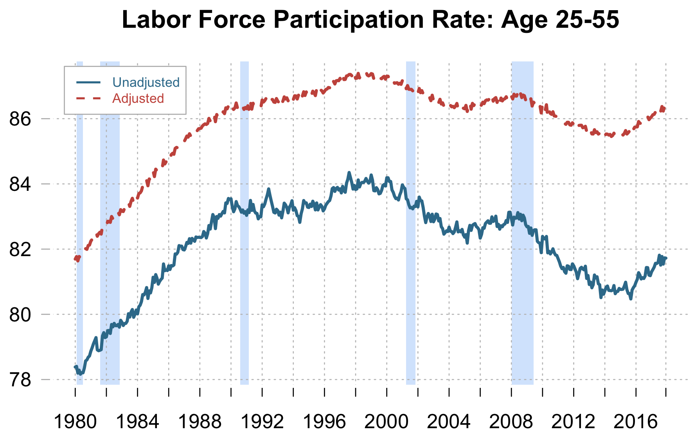

Peter Rupert
University of California, Santa Barbara
2127 North Hall
University of California
Santa Barbara, CA 93106
peter.rupert@ucsb.edu

I was born in Munich and moved to San Diego when I was in first grade. I am currently an Assistant Proffessor at Unviersity of Warwick. I love soccer and I support FC Bayern München. I am an avid consumer of cheese and believe that beer is never the answer, it is the question and the answer is: yes.
Look Who's Searching: Revisiting Unemployment and Labor Market Flows
 Abstract: In this paper I document the extent to which the employed, unemployed and out of the labor force search for jobs using data from the American Time Use Survey (ATUS) from 2003 to 2017. In 2017, about 1 in 4 people age 25 to 55 who are classified as out of the labor force are looking for a job, a similar fraction to those that are searching on the job. I estimate search effort from the ATUS and predict the total number of job seekers in the United States from 1980 to 2017 using data from the Current Population Survey. Using the estimated number of job seekers, I construct an adjusted unemployment rate, participation rate and set of gross worker flows across labor market states. Accounting for the misclassification of individuals across labor market states dampens the cyclical properties of unemployment, participation, and worker flows. Similarly the participation margin accounts for only 9% of the variance of the unemployment rate and the volatility of the ratio of vacancies to job seeks decreases by nearly 40% when accounting for all searchers. Misclassification of individuals across unemployment and out of the labor force accounts for 60% of the decline of the participation rate of prime age working individuals since 2000.
University of California, Santa Barbara
2127 North Hall
University of California
Santa Barbara, CA 93106
peter.rupert@ucsb.edu
University of California, Santa Barbara
2127 North Hall
University of California
Santa Barbara, CA 93106
finn.kydland@ucsb.edu
University of California, Irvine
3151 Social Science Plaza
University of California
Irvine, CA 92697-5100
grochete@uci.edu
Universtiy of California, Santa Barbara
2127 North Hall
University of California
Santa Barbara, CA 93106
pjkuhn@econ.ucsb.edu